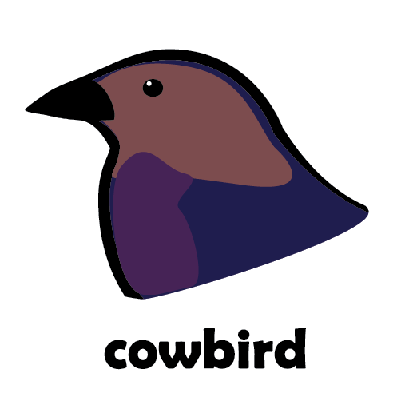

A password manager with no server of its own, just you and your Vault.
An end-to-end encrypted password manager written in Go that uses HashiCorp Vault as its storage backend. No server component of its own — just a client and the Vault you already run.
Design intent
Cowbird targets deployments with a known, finite set of users — a company team or a household — where each deployment runs its own Vault. Within that scope it makes three promises.
All item contents are encrypted on the client before they ever reach Vault. The Vault operator can never read them — path ACLs are not the security boundary, the cryptography is.
Share an individual item with another user, who can then read it — and see your subsequent edits — without the content ever being re-encrypted per recipient. Revoke access just as easily.
The only recovery mechanism is a user-initiated, passphrase-protected key export. There is deliberately no admin reset: no one exists who could perform one without also being able to read your data.
Encryption
Each item gets its own random 32-byte symmetric key. Content is encrypted once with that item key; the item key is then wrapped to each authorized recipient's public key. Granting access means wrapping one more key — content is never re-encrypted.
| Purpose | Primitive | Notes |
|---|---|---|
| Content & key encryption | XChaCha20-Poly1305 |
Authenticated encryption; decryption failures return a single generic error to avoid leaking failure mode |
| Key wrapping | X25519 |
Ephemeral ECDH + HKDF per wrap, via Go's stdlib crypto/ecdh |
| Password-derived keys | Argon2id |
time=3, memory=64 MB, threads=4, with HKDF domain separation per use |
| Key fingerprint | SHA-256 |
Hex-encoded hash of the X25519 public key |
| Authorship signing | Ed25519 |
Deferred — envelope field reserved; only matters under an adversarial-operator model |
Private keys never leave the client in plaintext. A user's keypair is generated client-side on first run and stored in Vault only in locked form — encrypted under an Argon2id-derived key. The unlock password is intentionally separate from the Vault credential, so an operator-side credential reset cannot decrypt anything.
Trust model
The storage operator is technically prevented from reading item contents but assumed not to actively forge user identities. In both target deployments the operator is accountable and non-adversarial — a corporate Vault team, or you yourself. Cowbird keeps the protections that cost users nothing and drops the ceremony that users skip anyway.
| Secret | Purpose | Where it lives |
|---|---|---|
| Vault auth credential | Authenticates to Vault (userpass / token / AppRole) | OS keyring |
| Unlock password | Decrypts the user's private key | User's head only |
| Export passphrase | Protects an exported key file | User's head only |
Changing your unlock password only re-wraps key material (cheap, frequent). Rotating your key re-secures all items (expensive, for compromise scenarios). Following the Bitwarden model, these are distinct operations by design.
Vault setup
Cowbird needs three things from your Vault: a KV v2 secrets engine, a templated
per-user policy, and an auth method for your users. The reference policy is
checked into the repo as
cowbird-user-access.hcl
and has been verified against a live deployment.
Cowbird stores everything under a single KV v2 mount. The mount path is
configurable in the first-run setup screen; cowbird is the
conventional name.
vault secrets enable -path=cowbird -version=2 kv
One policy serves every user. It uses {{identity.entity.id}}
templating, so each user's token resolves the same rules to their own
subtree — their items, identity, share links, and inbox.
vault policy write cowbird-user-access cowbird-user-access.hcl
Cowbird authenticates with userpass, token, or AppRole — attach the policy to whichever you use. With userpass, the username doubles as the display name other users see when sharing:
vault auth enable userpass
vault write auth/userpass/users/paul \
password='…' \
token_policies="cowbird-user-access"
One caveat: userpass in Vault 2.0.0 emits no
group claims, so users can't inherit the policy by joining an identity
group — assign it per user via token_policies as above.
| Namespace | The user themselves | Everyone else |
|---|---|---|
users/<you>/* |
Full CRUD — items, locked identity, share links, share records | No access |
pubkeys/* |
Create, read, update own entry | Read and list all (public keys are public) |
shared/<you>/* |
Full CRUD on own shared envelopes | Read all — safe because contents are encrypted; the wrapped item key is the security boundary, not the path ACL |
inbox/<you>/* |
Read, list, delete own messages | Create only — a sender can drop a new message but cannot read, list, or overwrite |
ACL gotcha if you adapt the policy: Vault does not merge
capabilities across matching rules — the most specific matching path wins
outright. An exact templated path shadowed by a glob must repeat every
capability the glob would have granted. This is why the own-pubkey rule
repeats read even though data/pubkeys/* already
grants it.
Status
The crypto layer, item storage, sharing service, and the full desktop UI flow — setup, unlock, item editing, share and revoke — are implemented and tested against a live Vault deployment.